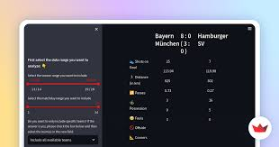

Criando Interfaces com Streamlit
book_2 Instalação do Streamlit
book_2 Elementos básicos de interface
engineering Mini-Projeto Prático
Streamlit é uma biblioteca Python de código aberto que permite criar aplicações web interativas de forma rápida e simples, sem necessidade de conhecimentos avançados em desenvolvimento web (HTML, CSS, JavaScript).

pip install streamlit
Caso já tenha o Streamlit instalado, você pode atualizá-lo com:
pip install --upgrade streamlit
Se receber um erro de permissão, tente executar o comando com `sudo` (Linux/Mac) ou como administrador (Windows). Não sendo possível ou desejado, utilize um ambiente virtual, ('venv') como aprendemos na aula passada.
1. Crie um arquivo chamado app.py:
import streamlit as st
st.write("Olá, Streamlit!")
2. Execute o app no terminal:
streamlit run app.py
3. Seu navegador abrirá automaticamente na página Streamlit da aplicação
Objetivo: Crie um programa usando Streamlit exibindo seu nome e o bairro onde você mora.
import streamlit as st
st.write("Meu nome é Fulano!")
st.write("Eu moro no bairro XYZ.")
Um app Streamlit é executado de cima para baixo, como um script Python normal. Sempre que há interação do usuário, o script é re-executado.
import streamlit as st
# 1. Configuração da página (opcional)
st.set_page_config(page_title="Meu App",
page_icon=":smiley:",
layout="centered")
# 2. Título e descrição
st.title("Meu Aplicativo")
st.write("Descrição do app")
# 3. Inputs do usuário
nome = st.text_input("Digite seu nome:")
# 4. Processamento e lógica
if nome:
mensagem = f"Olá, {nome}!"
# 5. Exibição de resultados
st.success(mensagem)
st.title() - Título principal da página
st.title("Meu Aplicativo Streamlit")
st.header() - Cabeçalho de seção
st.header("Seção de Análise")
st.subheader() - Subcabeçalho
st.subheader("Gráficos de Vendas")
st.write() - Função versátil que exibe diversos tipos de conteúdo
st.write("Este é um texto simples.")
st.write("Este é um texto com **negrito**.", unsafe_allow_html=True)
st.write("Este é um texto com *itálico*.", unsafe_allow_html=True)
st.write([1, 2, 3, 4])
st.write({"nome": "Ana", "idade": 25})
st.markdown() - Texto formatado em Markdown
st.markdown("# Título em Markdown")
st.markdown("## Subtítulo em Markdown")
st.markdown("Texto com **negrito** e *itálico*.")
st.text() - Texto monoespaçado e sem formatação
st.text("Texto monoespaçado e sem formatação")
Objetivo: Crie um app que exiba:
import streamlit as st
st.title("Meu Perfil")
st.header("Informações Pessoais")
st.write("Nome: João Silva - Profissão: Desenvolvedor Python")
st.markdown("### Meus Hobbies\n- Ler\n- Viajar\n- Programar")
Objetivo: Crie um app que exiba uma lista de suas 3 linguagens de programação favoritas usando diferentes métodos de exibição.
import streamlit as st
st.title("Minhas Linguagens Favoritas")
st.header("Lista com write:")
st.write(["Python", "JavaScript", "Go"])
st.header("Lista com Markdown:")
st.markdown("""
- **Python**: Para Data Science
- **JavaScript**: Para Web
- **Go**: Para Backend
""")
st.title() - Título principal da página
nome = st.text_input("Digite seu nome:", value="", max_chars=50)
st.write(f"Nome digitado: {nome}")
st.number_input() - Entrada numérica
idade = st.number_input("Digite sua idade:",
min_value=0, max_value=120,
value=25, step=1)
st.write(f"Idade: {idade}")
st.radio() - Seleção única (botões de rádio)
opcao = st.radio("Escolha uma opção:", ("Opção 1", "Opção 2", "Opção 3"))
st.write(f"Opção escolhida: {opcao}")
st.selectbox() - Menu dropdown para seleção de tipos de conteúdo
cidade = st.selectbox("Selecione sua cidade:",
["São Paulo", "Rio de Janeiro", "Belo Horizonte"])
st.write(f"Cidade selecionada: {cidade}")
st.checkbox() - Caixa de seleção
concordo = st.checkbox("Aceito os termos")
if concordo:
st.write("Termos aceitos!")
st.button() - Botão de ação
if st.button("Clique aqui"):
st.write("Botão clicado!")
# ou...
botao = st.button("Clique aqui 2")
if botao:
st.write("Botão clicado!")
st.slider() - Controle deslizante
valor = st.slider("Selecione um valor:", 0, 100, 50)
st.write(f"Valor selecionado: {valor}")
Objetivo: Crie um formulário de cadastro que capture:
Quando o botão for clicado e os termos aceitos, exiba todas as informações.
import streamlit as st
st.title("Formulário de Cadastro")
nome = st.text_input("Nome completo:")
idade = st.number_input("Idade:", min_value=0, max_value=120, value=18)
cidade = st.selectbox("Cidade:", ["São Paulo", "Rio de Janeiro", "Brasília"])
termos = st.checkbox("Aceito os termos de uso")
if st.button("Cadastrar"):
if termos:
st.success("Cadastro realizado com sucesso!")
st.write(f"**Nome:** {nome}")
st.write(f"**Idade:** {idade}")
st.write(f"**Cidade:** {cidade}")
else:
st.error("Você precisa aceitar os termos de uso!")
Objetivo: Crie um conversor de temperatura que:
import streamlit as st
st.title("Conversor de Temperatura")
conversao = st.radio("Tipo de conversão:",
["Celsius para Fahrenheit", "Fahrenheit para Celsius"])
temperatura = st.number_input("Digite a temperatura:", value=0.0, step=0.1)
if st.button("Converter"):
if conversao == "Celsius para Fahrenheit":
resultado = (temperatura * 9/5) + 32
st.success(f"{temperatura}°C = {resultado:.2f}°F")
else:
resultado = (temperatura - 32) * 5/9
st.success(f"{temperatura}°F = {resultado:.2f}°C")
st.success() - Mensagem de sucesso (verde)
st.success("Operação realizada com sucesso!")
st.warning() - Mensagem de aviso (amarelo)
st.warning("Atenção: Verifique os dados informados.")
st.error() - Mensagem de erro (vermelho)
st.error("Erro: Não foi possível processar a solicitação.")
st.info() - Mensagem informativa (azul)
st.info("Informação: O sistema será atualizado em breve.")
st.code() - Exibir código
st.code("""
def saudacao(nome):
return f"Olá, {nome}!"
""", language="python")
st.json() - Exibir JSON
st.json({"nome": "Maria", "idade": 30, "cidade": "Salvador"})
Objetivo: Crie um validador de senha que:
import streamlit as st
st.title("Validador de Senha")
senha = st.text_input("Digite uma senha:", type="password")
if st.button("Validar"):
if len(senha) >= 8:
st.success("Senha válida! Possui 8 ou mais caracteres.")
else:
st.error("Senha inválida! Deve ter no mínimo 8 caracteres.")
st.warning(f"Sua senha tem apenas {len(senha)} caracteres.")
Objetivo: Crie um validador de senha que:
import streamlit as st
st.title("Validador de Senha")
senha = st.text_input("Digite uma senha:", type="password")
if st.button("Validar"):
if len(senha) >= 8:
st.success("Senha válida! Possui 8 ou mais caracteres.")
else:
st.error("Senha inválida! Deve ter no mínimo 8 caracteres.")
st.warning(f"Sua senha tem apenas {len(senha)} caracteres.")
# Adicionar elementos na barra lateral
st.sidebar.title("Menu")
opcao = st.sidebar.selectbox("Escolha uma opção:",
["Home", "Sobre", "Contato"])
# Conteúdo principal
st.title("Página Principal")
st.write(f"Você está em: {opcao}")
col1, col2, col3 = st.columns(3)
with col1:
st.header("Coluna 1")
st.write("Conteúdo da primeira coluna")
with col2:
st.header("Coluna 2")
st.write("Conteúdo da segunda coluna")
with col3:
st.header("Coluna 3")
st.write("Conteúdo da terceira coluna")
st.write("Seção 1")
st.divider()
st.write("Seção 2")
with st.expander("Clique para ver mais"):
st.write("Conteúdo oculto que aparece ao expandir")
st.write("Conteúdo oculto que aparece ao expandir")
st.write("Conteúdo oculto que aparece ao expandir")
container = st.container(border=True)
container.write("Este conteúdo está em um container")
container.button("Botão no container")
Objetivo: Crie um dashboard que:
import streamlit as st
st.title("Dashboard de Vendas")
# Sidebar
pagina = st.sidebar.selectbox("Navegação:", ["Home", "Dados", "Sobre"])
if pagina == "Home":
st.header("Visão Geral")
# Métricas em 3 colunas
col1, col2, col3 = st.columns(3)
with col1:
st.metric("Vendas Totais", "R$ 45.000", "+12%")
with col2:
st.metric("Clientes", "320", "+8%")
with col3:
st.metric("Produtos", "85", "+3%")
st.divider()
st.subheader("Análise Mensal")
st.info("Os dados estão atualizados até hoje.")
elif pagina == "Dados":
st.header("Dados Detalhados")
st.write("Aqui você pode visualizar os dados completos.")
else:
st.header("Sobre")
st.write("Este é um dashboard de exemplo criado com Streamlit.")
Objetivo: Crie um perfil de usuário que:
import streamlit as st
st.set_page_config(page_title="Perfil de Usuário",
page_icon="👤",
layout="centered")
st.title("Perfil de Usuário")
# Cabeçalho com colunas
col1, col2 = st.columns([1, 3])
with col1:
st.image("https://c8.alamy.com/comp/F5038B/london-uk-25th-october-2015-coleen-ling-holds-up-her-chihuahua-ollie-F5038B.jpg",
width=200)
with col2:
st.header("Maria Silva")
st.write("Desenvolvedora Full Stack")
st.divider()
# Seções expansíveis
with st.expander("Sobre Mim"):
st.write("""
Desenvolvedora com 5 anos de experiência em Python e JavaScript.
Apaixonada por criar soluções inovadoras e eficientes.
""")
with st.expander("Habilidades"):
st.write("- Python (Django, Flask, Streamlit)")
st.write("- JavaScript (React, Node.js)")
st.write("- SQL e NoSQL")
st.write("- Machine Learning")
with st.expander("Contato"):
st.write("**Email:** maria.silva@example.com")
st.write("**LinkedIn:** linkedin.com/in/mariasilva")
st.write("**GitHub:** github.com/mariasilva")